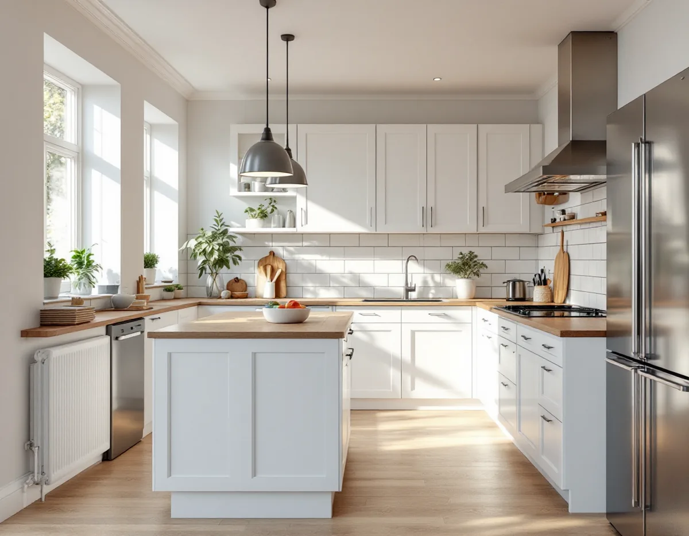
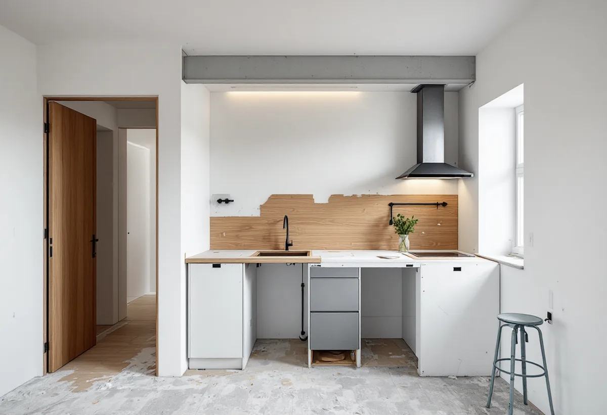

Platsbesök och önskemål
Vi går igenom köket, avlopp, ventilation och el och vilka väggar som berörs, och vad du vill uppnå.
En köksrenovering kan vara allt från nya luckor och bänkskiva till ett helt nytt kök med flyttad diskbänk och öppen planlösning. Ju mer som flyttas – vatten, avlopp, el, fläkt eller väggar – desto fler regler berörs. Geal Entreprenad AB tar hela köksprojektet i villor och bostadsrätter i Stockholm, från rivning till sista skåpslucka, med gratis platsbesök och skriftligt kostnadsförslag.

Skåp och luckor går att rita om nästan hur som helst. Det som avgör hur stort projektet blir är var diskbänken, köksfläkten och spisen hamnar i förhållande till befintliga avlopp, ventilationskanal och elcentral. Ligger allt kvar på samma plats kan köket ofta bytas utan ingrepp i husets installationer. Ska diskbänken till en köksö eller fläkten till en annan vägg krävs nya rör, ny kanaldragning och ofta ny el.
Bestäm därför tidigt vad som ska vara kvar. Tre nivåer är vanliga: byte av luckor, bänkskiva och vitvaror i befintlig stomme; nytt kök med samma planlösning; eller nytt kök där funktioner flyttas eller en vägg tas bort. Den sista nivån är den enda som normalt berör bygglagstiftningen och, i bostadsrätt, föreningens tillstånd.
Tänk också på hur gammalt köket och huset är. I äldre villor kan elcentral och avlopp behöva ses över samtidigt, och då är det enklare att göra det medan köket ändå är rivet. Vill du göra om fler rum i samma veva kan det vara värt att läsa om villarenovering och om badrumsrenovering, eftersom kök och badrum ofta delar stam.

Att riva väggen mellan kök och vardagsrum är en av de vanligaste önskningarna. Är väggen bärande gäller plan- och bygglagen: enligt Boverket är en ändring som väsentligt påverkar konstruktionen av byggnadens bärande delar anmälningspliktig. Arbetet får inte påbörjas förrän byggnadsnämnden gett startbesked, och den ombyggda delen får inte tas i bruk förrän slutbesked finns, om nämnden inte beslutar annat.
Om en vägg bär eller inte går sällan att avgöra med blotta ögat. Bjälklagets riktning, vad som står ovanpå och hur huset är byggt spelar in. I praktiken behövs ofta en konstruktionsberäkning för balk och upplag, och den ingår i underlaget till anmälan. Räkna med att den här delen styr tidplanen, eftersom du behöver vänta på startbesked innan rivningen.
I bostadsrätt kräver ett ingrepp i bärande konstruktion dessutom styrelsens tillstånd enligt bostadsrättslagen. Föreningen kan vilja se konstruktörens underlag innan den svarar. Skatteverket godkänner rotavdrag i småhus för att riva väggar och bygga om planlösningen, så länge större delen av den ursprungliga stommen behålls.
Köksfläkten är en del av husets ventilation och därför mer än en vitvara. Installation eller väsentlig ändring av en anordning för ventilation är anmälningspliktig enligt plan- och bygglagen. Att byta en fläkt mot en likvärdig på samma plats är något annat än att dra en ny kanal genom ett bjälklag eller ansluta en motordriven fläkt till ett system som är byggt för självdrag.
I flerbostadshus kan köksventilationen hänga ihop med husets gemensamma system, och då är det föreningen som vet vilken typ av köksfläkt som passar. Bostadsrättslagen kräver styrelsens tillstånd för installation eller ändring av ventilationen. Säker Vatten påminner om att även brandskyddsregler kan beröra ventilationssystemet vid en renovering, trots att själva åtgärden inte gäller ventilation.
I villan är det enklare men kraven på funktion är desamma: fläkten ska föra bort os och fukt utan att ändra balansen i resten av husets ventilation. Rengöring av ventilation och imkanaler räknas enligt Skatteverket som rotarbete i småhus, medan rengöring av själva spisfläkten hör till rut.
Säker Vattens råd till konsumenter gäller uttryckligen kök, badrum och tvättstuga. Ett auktoriserat VVS-företag ska lämna ett intyg efter arbetet med omfattningen och eventuella avvikelser, och montörerna ska kunna visa branschlegitimation. Intyget är en värdehandling som ska sparas – det är det du kan visa upp vid en vattenskada under diskbänken.
Ny belysning under överskåpen, fler uttag på bänken eller en induktionshäll med större effektbehov är elinstallationer som ska göras av ett registrerat elinstallationsföretag. I äldre hus kan elcentralen behöva kompletteras när köket får fler maskiner. Hos Geal utförs el och VVS av behöriga installatörer som samordnas med snickeriet, så att rör och kablar ligger rätt innan skåpen monteras.
I villa kan installation eller väsentlig ändring av en anläggning för vatten eller avlopp i byggnaden kräva anmälan. Vad som räknas som väsentligt bedömer kommunen, så en helt ny avloppsdragning till en köksö är värd att stämma av där innan arbetet planeras klart.
Ska golvet bytas är det ofta enklast att göra det innan de nya skåpen står på plats, så att det går in under stommen – men det beror på golvtyp och tillverkarens anvisningar. Behålls ett äldre trägolv kan det slipas i samma veva som resten av rummet – se golvläggning och slipning. Väggar som ska målas eller tapetseras görs innan överskåpen hängs upp.
Stänkskyddet bakom bänken och spisen är den yta som utsätts mest. Kakel, glas och skivmaterial har olika krav på underlag och infästning, och eluttagen i stänkskyddet ska placeras innan plattorna sätts. Skatteverket godkänner rotavdrag för att sätta kakel, byta golv och väggmaterial samt måla eller lacka köksluckor.
Vi går igenom köket, avlopp, ventilation och el och vilka väggar som berörs, och vad du vill uppnå.
Du får ett skriftligt förslag. Vid behov tas underlag fram för anmälan till kommunen eller ansökan hos styrelsen.
Gamla skåp, vitvaror och ytskikt monteras ner och bärs ut, och vatten och el kopplas bort på ett säkert sätt.
Installatörerna drar rör, el och kanaler för fläkten enligt den nya planen, innan väggar och golv stängs.
Golv och väggar färdigställs, stommen monteras och bänkskivan mäts in och sätts på plats.
Vitvaror, blandare och belysning ansluts och provas, och du får intyg och skötselanvisningar.
Du får rotavdrag med 30 procent av arbetskostnaden, högst 50 000 kr per person och år, och rot och rut får tillsammans vara högst 75 000 kr. Skåp, bänkskiva, vitvaror och annat material ger inget avdrag. Enligt Skatteverkets förteckning räknas bland annat att montera fast köksinredning och installera vitvaror i samband med omfattande byggarbete eller renovering, att byta köksluckor, att modernisera el och byta uttag, att installera blandare och kranar samt att sätta kakel. Att enbart reparera en diskmaskin är rut, inte rot.
I bostadsrätt gäller avdraget arbete inne i lägenheten som du ansvarar för enligt stadgarna, och fast köksinredning och vitvaror räknas när de monteras i samband med byggarbetet. Geal drar avdraget direkt på fakturan och ansöker om utbetalningen hos Skatteverket.
Den största skillnaden ligger i nivån: ett ansiktslyft med nya luckor och bänkskiva är ett mindre jobb än ett kök där diskbänk och fläkt flyttas. En bärande vägg som tas bort lägger till konstruktionsberäkning, balk och anmälan. Val av stomme, bänkskiva och vitvaror styr materialkostnaden, och i äldre hus kan elcentral och avlopp behöva åtgärdas.
Vi lämnar inga schablonpriser. Efter ett gratis platsbesök får du ett skriftligt kostnadsförslag där arbete och material står var för sig, så att du ser vad ROT-avdraget gäller.
Tätskikt, golvbrunn och intyg i våtrummet.
Badrumsrenovering i Stockholm →Inredning, väggar och snickeri inomhus.
Snickare →Väggar, tak och lackade luckor.
Målare →Kök, badrum och helhet i ett projekt.
Villarenovering →